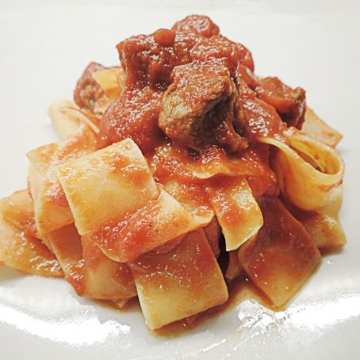

This recipe requires some planning but it's easy!
The night before, marinate the meat.
The day the dish will be prepared, prepare the sauce and let it simmer until ready to eat.
|

|
- 1 kilogram of wild boar meat
- 1 sprig of rosemary
- 4 sage leaves
- 5 clove of garlic
- 1 bay leaf
- 4 cloves
- 1 bottle of dry red wine
- 2 celery sticks
- 2 onions
- Extra virgin olive oil
- 100 grams of pancetta
- Parsley
- Calabrian chilies to taste
- Tomato paste
- Sea salt and pepper
- Freshly made pappardelle pasta
|